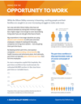

Why Measure E?
Silicon Valley is experiencing a crisis of underemployment.
San Jose and other Silicon Valley cities have set national examples by raising their minimum wages. But a higher wage is not enough to cover skyrocketing living costs if you can only get a few hours of work.
Big corporations in low-wage industries are using abusive work schedules to shift costs onto their employees. Instead of creating full-time jobs, companies are hiring more workers — but only giving them part-time hours.
In the past 10 years, the number of hourly workers who do not have full-time work at their primary job has mushroomed. Today, roughly 64,000 workers — more than a quarter of the hourly workforce — have part-time or variable schedules at their main job.
By keeping workers part-time, unscrupulous companies avoid providing critical benefits like health insurance and retirements plans. And nationally, part-timers are typically paid a third less per hour than full-time employees.
Measure E will help stop this misbehavior. It says that before hiring extra part-time employees, businesses have to offer those hours to current workers who are qualified to do the job.
-
A Hidden Crisis
Underemployment in Silicon Valley's hourly workforce
Read the report
-

Factsheet
Printable stats on the underemployment crisis
Download
-

“They tell me there's no work, it's really slow — and yet they’re still hiring.”
When a new boss cut her hours, Alejandra Mejia had to support her family of four on just $100 a week.
Read Alejandra's story